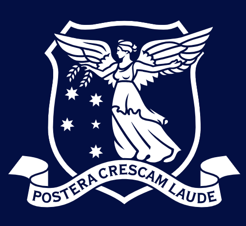

About Me
I am a self-directed engineer actively building within signal processing, VLSI & ASIC design, and field-based device physics in the context of semiconductors, robotics and autonomous systems, and machine learning.
My approach to engineering is fundamentally first-principled and implementation-level, focused on building performant, scalable, and valuable proprietary systems.
Technical Skills
Languages: C, C++, Python, MATLAB, Verilog, SystemVerilog …
Simulation & Analysis: Matlab (Signal Processing, Control System, System ID …), Simulink, SPICE …
RTL Silicon Engineering: SystemVerilog RTL, Quartus Prime, formal verification …
Electromechanical Integration: Parametric CAD (Solidworks, Onshape), Embedded Control …
Education
-

Bachelor of Science, The University of Melbourne↳ Supplementing majors with advanced Software Engineering and Physics tracks. -
Master of Electrical Engineering (Machine Learning & Autonomous Systems), The University of Melbourne